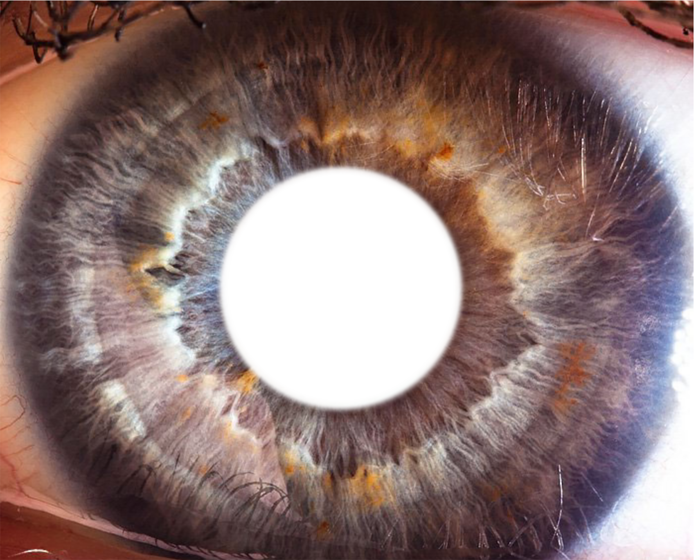
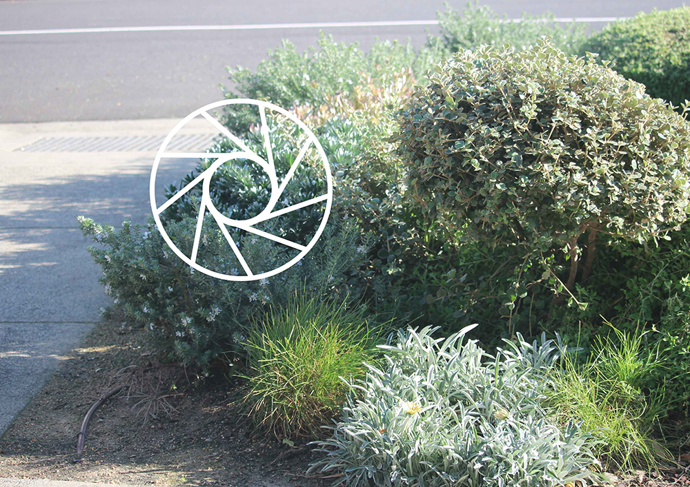
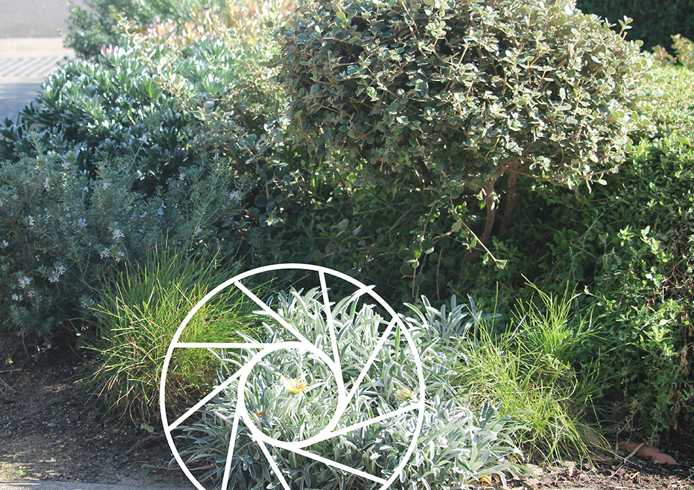
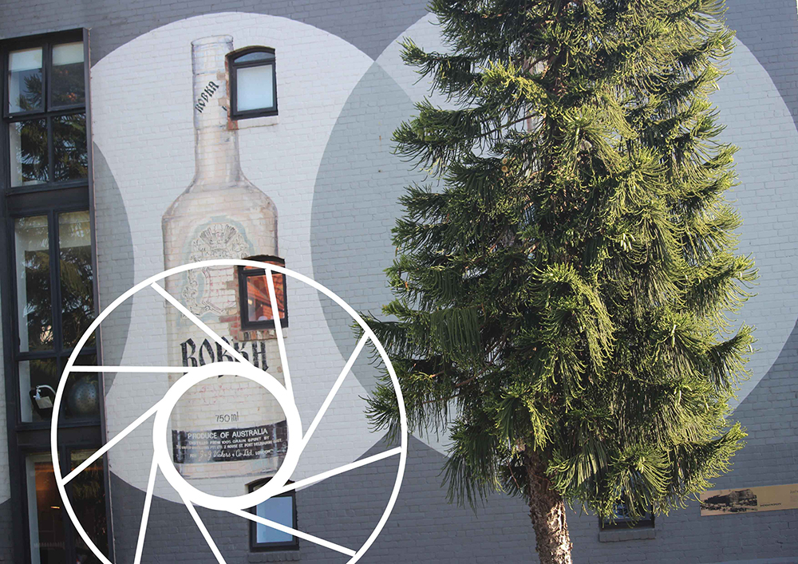
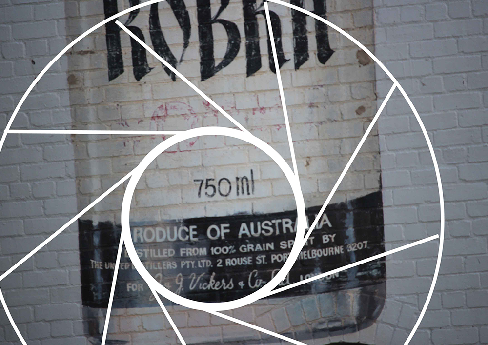
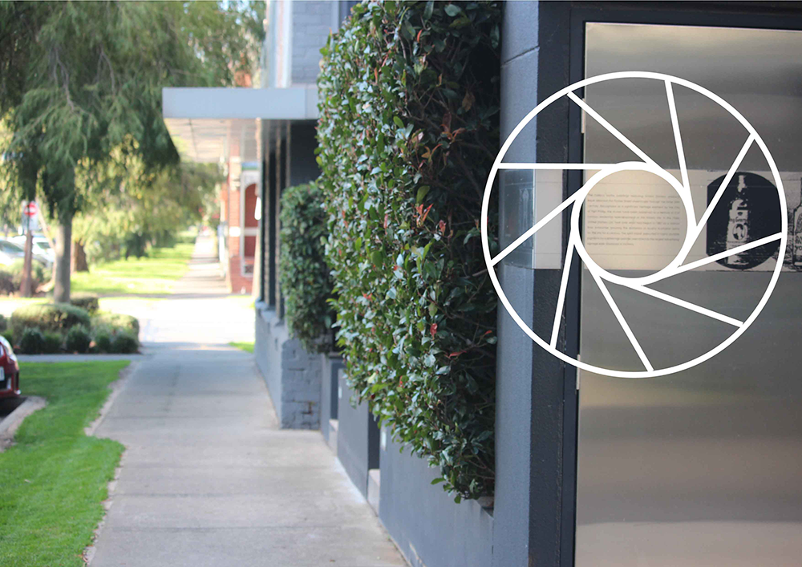
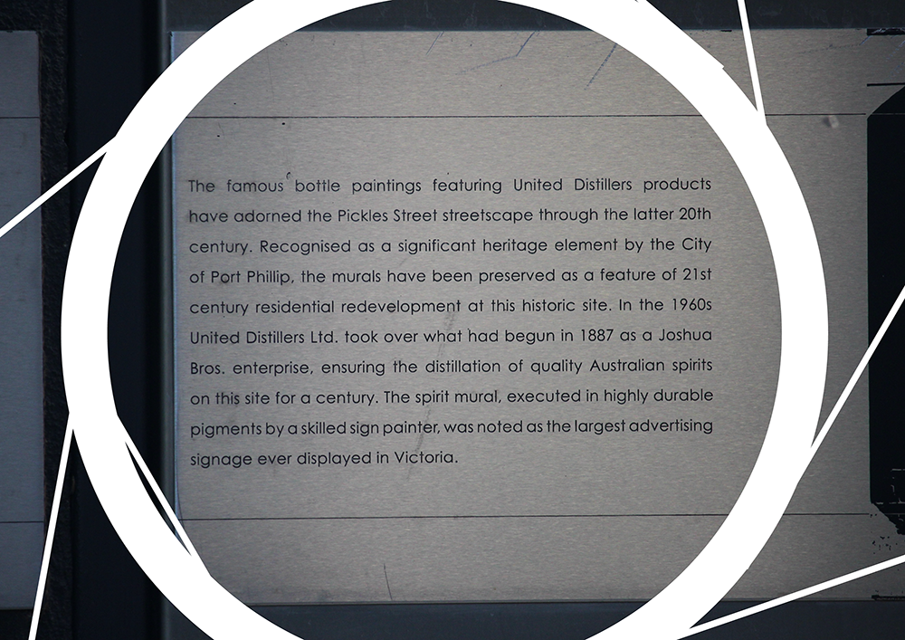

2030
What would you do if we told you that one day soon you may be able to see in the dark? Or that you'll have the ability to 'zoom' in on objects to make them appear larger just by looking at them? You'd probably laugh and tell us that is the stuff of superheroes! However, believe it or not, a number of companies have already announced they're researching smart contact lens technology that could accelerate vision beyond natural human capabilities.
You can wear basic smart contact lenses like a normal contact lens; they don’t require surgery and can be inserted or removed by the user. They sit on the eyeball and contain micro versions of existing technology.
The advanced smart lens involves a surgical replacement of your existing lens with an electronic one. Fluid is injected into the eye, fusing with the lens capsule as it solidifies. This has the same technological features but is more robust and permanent. The artificial lens takes over the job of focusing light on the retina, improving vision in a flexible way. However, they’re likely to be just as comfortable as normal lenses. Smart lenses are designed to harvest energy. The two methods being discussed are solar power sensors, to convert light to electrical power, and piezoelectric sensors, to convert the mechanical eye movement of blinking into electrical power.
As a vision-based technology, smart contact lenses are an obvious way to explore virtual and augmented reality, and camera technologies. Samsung is working on a way to project visual information directly into the retina of the eye so that the field of vision is altered. It functions like a tiny version of Google Glass and would create a mixed reality experience.
Sony has applied for a patent for a smart contact lens which can convert eye movement into electrical power, which you control through blinking your eyes. The lens can actually store images or video once recorded.
The ability to see augmented and mixed reality content or to take photos and videos (or both) with Google Glass was a great idea. But everybody slammed the nerdy look of wearing all that gear on your face. What if all that functionality were shrunk into a contact lens?
Sony applied for a patent for a smart contact lens that can record video. You control it by blinking your eyes.
According to Sony's patent, sensors in the lens can tell the difference between voluntary and involuntary blinks. (This was a feature of Google's Glass prototype, which could take a photo when you winked.) When it detects a deliberate blink, it records a video. Sony's contact lens would be powered by piezoelectric sensors that convert eye movement into electrical power. It would involve extremely small versions of all the parts of a modern digital camera -- an auto-focusing lens, a CPU, an antenna and even on-lens storage. Soon after the Google and Samsung patents, Sony had a patent approved too, and if the specs can be trusted, their gadget will sport far more features than those offered by Samsung or Google. In addition to photos, users will be able to video their environments, through a technology that will be able to differentiate between normal blinking and deliberate activation of the camera. And whatever a wearer will want to record will then be transmitted to an external device. The features of the proposed Sony device will mimic those of the best cameras on the market.
Richard Watson, futurist speaker scenario thinker and author, wrote “The contact lens will be the most important technology gadget of a generation”.
Within his article/comment Richard starts off by asking us “What’s the next big thing in tech? You’d think that after Google’s Glasses (Glassholes) fiasco and the hopeless hype of Facebook’s Oculus VR googles we’d be over the whole world in your face thing, but apparently not. Google, Sony, Samsung and others have got their eyes on a prize where electronic contact lenses become commonplace: a world where conditions like diabetes can be monitored simply by popping in a pair of smart lenses to read your tears to test your blood sugar levels, wirelessly sending data to an external device or local hospital. Power would come from tiny solar panels on the lenses or even, perhaps, from harvesting radio frequency signals freely floating in the air. The dream is that one day such smart lenses could dispense drugs or monitor a variety of other medical conditions or social interactions. In a further future, we might even use smart lenses to control everything from our televisions to our toasters or, in a darker future, authoritarian governments might use them to control us. Or we might dispense with the whole idea of wearing lenses like ephemeral fashion accessories and start to implant them surgically, removing parts of our eyes in what could be an irreversible process. If this sounds a bit like an episode of Black Mirror, you might not be far wrong. If you want a picture of the future, imagine smart contacts stuck to a human face – forever. Blinking hell.”
Richard has spoke of this idea in an extreme way, one to scare off the idea by stretching its complexities. He finishes his article with “This is a bit extreme. It’s far more likely that what amounts to bionic eyes will be niche devices used by the military, security services or medics, but we should all keep our eyes open just in case this particular sci-fi fantasy becomes a dystopian reality.”
However, I want to use this website to look at the positives of these removable contact lens. To be able to see the world from our own eyes that is not humanly possible. If we can already Zoom on a camera why not propose the idea to be able to do this with our eyes?
VISION
This will repair all vision for the vision impaired, much like the regular contact lens.
FOCAL CAPACITY
Giving the eye its own power to change its focal length of what they can already see. Manage to see things the human eye has never been able to see before.

See nature with your own eyes

Read small writing from the other side of the street




Don't blink, or you'll miss the smart contact lens revolution.